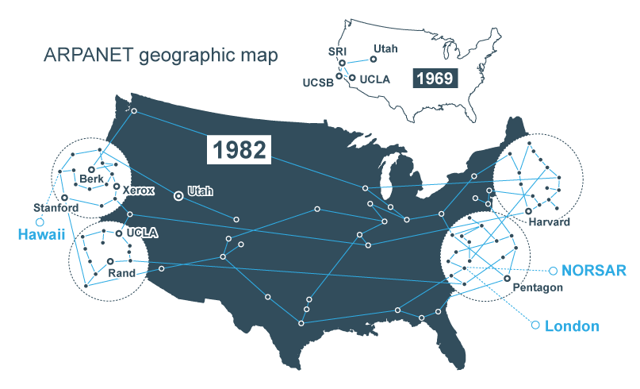

A história da internet
A história da internet começa no ambiente da Guerra Fria (1945-1991). As duas super potências envolvidas, Estados Unidos e União Soviética, estavam divididas nos blocos socialista e capitalista e disputavam poderes e hegemonias.
Arpanet
Com o intuito de facilitar a troca de informações, pois temiam ataques dos soviéticos, o Departamento de Defesa dos Estados Unidos (ARPA - Advanced Research Projects Agency) criou um sistema de compartilhamento de informações entre pessoas distantes geograficamente, a fim de facilitar as estratégias de guerra.
Nesse momento, surge o protótipo da primeira rede de internet,a Arpanet (Advanced Research Projects Agency Network) .
Assim, no dia 29 de outubro de 1969 foi estabelecida a primeira conexão entre a Universidade da Califórnia e o Instituto de Pesquisa de Stanford. Foi um momento histórico, uma vez que o primeiro e-mail foi enviado.
Criação do www
Já na década de 90, o cientista, físico e professor britânico Tim Berners-Lee desenvolveu um navegador ou
browser, a World Wide Web (www), a Rede Mundial de Computadores - Internet.

Sua criação é responsável por apresentar ao mundo o modo como utilizamos a internet atualmente. Portanto, apesar de não ter sido o inventor da conexão entre computadores geograficamente distantes (a já citada Arpanet), foi o britânico quem desenvolveu o modelo que acessamos cotidianamente.
A partir disso, a década de 90 ficou conhecida como o "boom da internet", pois foi quando ela se popularizou pelo mundo. Essa popularização aconteceu com o surgimento de novos browsers ou navegadores e o aumento do número de usuários, navegadores da internet. Exemplos de navegadores da época:- Internet Explorer;
- Netscape;
- Mozilla Firefox;
- Opera;
- Lynx
| Periodo | acontecimento | resumo |
| 945–1991 | Guerra Fria | EUA e União Soviética disputavam poder e tecnologia. Esse contexto contribuiu para o desenvolvimento de redes de comunicação. |
| 1969 | ARPANET | A ARPA, dos EUA, criou uma rede para facilitar a troca de informações entre computadores distantes. |
| 29/10/1969 | Primeira conexão | Foi estabelecida uma conexão entre a Universidade da Califórnia e o Instituto de Pesquisa de Stanford. |
| Década de 1990 | World Wide Web (WWW) | Tim Berners-Lee desenvolveu a Web, permitindo acessar informações por meio de páginas e navegadores. |
| Década de 1990 | Popularização da Internet | A Internet se espalhou pelo mundo, com o surgimento e crescimento de navegadores e sites. |
| Anos 1990–2000 | Sites e redes sociais | Surgiram serviços como MSN, Orkut, Facebook e Twitter, ampliando a comunicação pela Internet. |